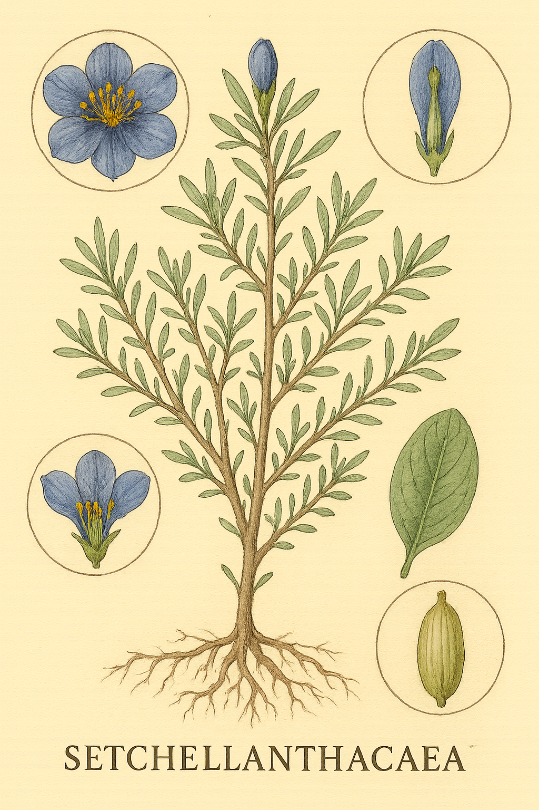

Setchellanthaceae
Setchellanthaceae is a remarkable monotypic family containing only the species Setchellanthus caeruleus, a shrub endemic to desert regions of Mexico. Despite its large, showy, 5-petaled flowers with numerous stamens—unlike typical members of its order—biochemical and molecular evidence firmly place it within the Brassicales (mustard order). It represents an early diverging lineage in this group.
Overview
Setchellanthaceae is a small but evolutionarily significant family comprising just a single species, Setchellanthus caeruleus. This unique plant is a shrub found only in the arid and semi-arid regions of Mexico. Its classification places it within the order Brassicales, a large group within the rosid clade known primarily for the mustard family (Brassicaceae) and its relatives, which typically have 4-petaled flowers.
Setchellanthus stands out morphologically within Brassicales due to its large, showy, blue or violet flowers with 5 petals and numerous stamens. However, its placement in the order is strongly supported by the presence of glucosinolates (mustard oil glycosides) and specialized myrosin cells – the biochemical system responsible for the pungent taste and smell of mustards and cabbages – as well as by molecular phylogenetic data. It is considered an early diverging lineage, potentially sister to the rest of the core Brassicales families.
Due to its restricted range and specialized habitat, Setchellanthus caeruleus is not widely known or cultivated, but it holds considerable scientific interest for understanding the early evolution and diversification of the Brassicales order.
Quick Facts
- Scientific Name: Setchellanthaceae
- Common Name: (None widely accepted)
- Number of Genera: 1 (Setchellanthus)
- Number of Species: 1 (Setchellanthus caeruleus)
- Distribution: Endemic to Mexico (desert regions)
- Evolutionary Group: Eudicots - Rosids - Malvids - Brassicales
Key Characteristics
Growth Form and Habit
Setchellanthus caeruleus is a much-branched, often low-growing shrub adapted to arid conditions. The plant contains myrosin cells, releasing pungent mustard-oil compounds when tissues are damaged.
Leaves
Leaves are arranged alternately along the stems. They are simple, relatively small, typically entire (smooth-margined) or sometimes slightly lobed, and may be somewhat thick or fleshy. They lack stipules (exstipulate) and may possess glandular hairs. The plant might be drought-deciduous.
Inflorescence
Flowers are generally borne solitary and are terminal on short shoots, though they may sometimes appear axillary due to shoot structure.
Flowers
The flowers are the most striking feature, being relatively large (up to 5-6 cm across) and showy, unlike typical Brassicales flowers. They are radially symmetrical (actinomorphic) and bisexual. Key features include:
- Calyx: Usually 5 sepals, fused at the base into a short tube, persistent in fruit.
- Corolla: Usually 5 large, distinct (free) petals. The petals are characteristically wrinkled or crumpled in appearance, especially in bud, and are typically a striking blue, violet, or purplish color.
- Androecium: Stamens are numerous (many, ~40-120), not the typical 6 of Brassicaceae. They arise, along with the ovary, from a short stalk-like structure called an androgynophore.
- Gynoecium: The pistil consists of 3 fused carpels (syncarpous). The ovary is positioned superiorly but is borne on the androgynophore (making it stipitate). It is unilocular (one chamber) with ovules attached to the ovary walls (parietal placentation). The single style is short, ending in a 3-lobed stigma.
Fruits and Seeds
The fruit is a stalked (stipitate), ovoid or ellipsoid capsule composed of 3 valves that split open from the top downwards (loculicidal dehiscence) to release several seeds.
Chemical Characteristics
The presence of glucosinolates and the enzyme myrosinase (stored in myrosin cells) is a key biochemical synapomorphy strongly linking Setchellanthaceae to the Brassicales order, despite its atypical floral morphology.
Field Identification
Identifying Setchellanthus caeruleus in its native Mexican habitat relies on its unique combination of features:
Primary Identification Features
- Habit & Habitat: A shrub found in desert or arid regions of Mexico.
- Flowers: Look for the large, solitary, showy flowers with 5 prominent, wrinkled petals that are typically blue, violet, or purplish. Note the numerous stamens.
- Ovary/Fruit Base: Observe that the ovary (and resulting capsule fruit) is borne on a distinct stalk (stipitate / androgynophore).
- Fruit: Identify the stalked, 3-valved capsule.
- Leaves: Note the alternate, simple, small, exstipulate leaves.
- Scent: If permitted, crushing a leaf may release a pungent, mustard-like odor (due to glucosinolates).
Secondary Identification Features
- Petal Texture: Wrinkled or crumpled appearance of petals.
- Stamen Number: Numerous stamens (many more than the 6 typical of Brassicaceae).
- Carpel Number: 3 fused carpels (reflected in 3-lobed stigma and 3-valved capsule).
Seasonal Identification Tips
- Flowering Period: Flowers are highly conspicuous and likely appear following seasonal rains.
- Year-round: The shrubby habit and leaf characteristics are visible year-round, though leaves may drop during severe drought. The pungent scent upon crushing tissue is also a constant clue.
Common Confusion Points
- Other Brassicales (Brassicaceae, Cleomaceae, Capparaceae): Easily distinguished by floral structure. Most core Brassicales have 4 petals and typically 6 stamens (4 long, 2 short), and different fruit types (siliques, silicles). Setchellanthus flowers are drastically different.
- Cistaceae (Rockrose family): Some shrubs have 5 petals and numerous stamens. Differ in usually having opposite leaves, superior ovary without a distinct stipe/androgynophore, different placentation/carpel number, lacking glucosinolates, and primarily Mediterranean distribution.
- Loasaceae (Stickleaf family): Some desert shrubs with showy flowers and numerous stamens. Differ in often having specialized hairs (stinging or barbed), usually inferior or semi-inferior ovaries, and different leaf/fruit types.
Field Guide Quick Reference
Look For:
- Mexican desert shrub
- Large, solitary flower
- 5 wrinkled blue/violet petals
- Numerous stamens
- Ovary/fruit on a stalk (stipitate)
- Fruit a 3-valved capsule
- Alternate, simple leaves
- Pungent mustard-oil scent
Key Distinctions:
- 5 petals, numerous stamens (vs. 4 petals, 6 stamens in typical Brassicales)
- Stalked ovary/fruit
- Wrinkled petals
- Glucosinolate scent (links to Brassicales)
Notable Examples
The Setchellanthaceae family is monotypic, containing only one species:

Setchellanthus caeruleus
(No common English name)
The sole representative of its family, this shrub is endemic to desert regions of Mexico. It is remarkable for its large, solitary, showy flowers featuring 5 wrinkled blue-violet petals and numerous stamens – a floral structure highly unusual for the Brassicales order where it belongs based on molecular and chemical (mustard oils) evidence. It produces a stalked, 3-valved capsule fruit.
Phylogeny and Classification
Setchellanthaceae, despite its unique floral morphology, is firmly placed within the order Brassicales based on robust molecular phylogenetic data and the shared presence of the defining biochemical trait of the order: the glucosinolate-myrosinase system ("mustard oils"). This order belongs to the Malvid clade within the Rosids.
The family is monotypic, containing only Setchellanthus caeruleus. Phylogenetically, Setchellanthaceae represents one of the earliest diverging lineages within the Brassicales. It is often resolved as the sister group to all other core Brassicales families (including Brassicaceae, Cleomaceae, Capparaceae, Caricaceae, Resedaceae, etc.). This basal position suggests that its floral features (e.g., 5 petals, numerous stamens, 3 carpels) might represent ancestral traits for the order, with the more typical 4-petaled, 6-stamen structure evolving later within the core group.
Position in Plant Phylogeny
- Kingdom: Plantae
- Clade: Angiosperms (Flowering plants)
- Clade: Eudicots
- Clade: Rosids
- Clade: Malvids
- Order: Brassicales
- Family: Setchellanthaceae
Evolutionary Significance
Setchellanthaceae is highly significant for understanding plant evolution:
- Basal Lineage in Brassicales: Its position as an early branch provides crucial insights into the ancestral characteristics and early diversification of the mustard oil order.
- Morphological Disparity: Highlights the potential for significant morphological evolution (especially floral structure) within an order defined by strong biochemical synapomorphies (glucosinolates).
- "Living Fossil" Potential: Represents a lineage with unique features that may reflect traits present in early Brassicales ancestors.
- Biogeographic Relict: Its restricted endemism to Mexico suggests it may be a relict of a potentially once more widespread lineage.